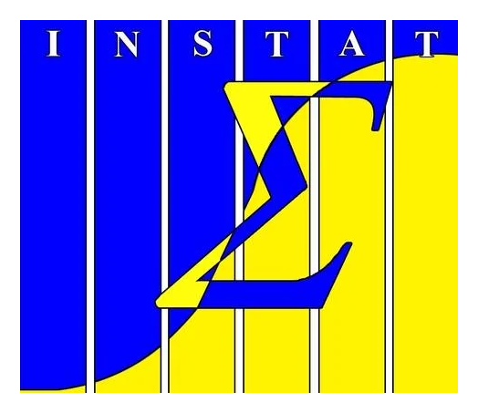

01 / OBSERVE
Hourly rainfall
42,240 hourly totals, Philippine Standard Time.

Autocorrelation-Aware Evaluation of Entropy-Based Feature-Spaces for Anticipating Meteorological Forecast Errors in Philippine Urban Environments, with Emphasis on Approaches from Information Theory and Topological Data Analysis
A forecast’s error is known only after the fact, but early action, like the Red Cross typhoon protocol, is decided three days ahead.
countries by disaster risk
WorldRiskReport, 2025tropical cyclones enter the PAR each year
PAGASA, n.d.of Filipinos exposed to multiple natural hazards
World Bank, 2022RMSE of PAGASA’s NWP rainfall forecasts, 2015 to 2018
Flores, 2019The target is not tomorrow’s rain. It is the size of the forecast’s eventual miss.
Predictors use only what is known when the forecast is issued.
42,240 hourly totals, Philippine Standard Time.
28 days ending at origin s. Complete windows only.
Issued at s, valid at s + 72 h. Up to 41,497 origins.
The response, after rounding both values to reporting precision.
All from the same 672-hour window. Each captures a different property; they are not interchangeable.
how spread out rainfall amounts are
Dry hours + 9 log-scale quantile bins, fixed from training data
Shannon, 1948
whether recurring sequences stay similar
m = 2, r = 0.2 × SD; unavailable if no matches
Richman & Moorman, 2000
how diverse the ordering patterns are
m = 3, τ = 1, 6 patterns; ties split fractionally
Bandt & Pompe, 2002
how power spreads across frequencies
Welch, Hann window; segment 336, overlap 168
Inouye et al., 1991
separate pieces merge
Delay embedding m = 3, τ = 6: 660 points in 3D
Chintakunta et al., 2015
loops form, then fill in
Vietoris–Rips filtration on log-transformed, standardized rainfall
Chintakunta et al., 2015
Icons are schematic illustrations, not study data.
Persistent Entropy = how evenly the lifetimes of those pieces and loops are spread as the distance scale grows.
Entropy is judged by what it adds to this set. Bins and scaling come from training data only.
| Label | Model | Past errors | Conventional | Classical entropy | Persistent entropy |
|---|---|---|---|---|---|
| — | Baseline ARIMA | ||||
| A | Conventional only | ||||
| B | Conventional + entropyPrimary test: B vs A | ||||
| B′ | B without Persistent EntropyTopology test: B vs B′ | ||||
| C | Stepwise selection (AICc)Secondary |
No random splits. A 72-hour gap at each boundary keeps unobserved errors out.
Test set, original error scale. Negative R² is reported as is.
Residual checks: Ljung–Box, ARCH-LM, Jarque–Bera.
A complement to forecasts, not a replacement. No results yet.
Flag forecasts likely to miss badly.
Weigh forecast reliability in anticipatory action.
Plan around expected forecast misses.
Quezon City rainfall, one model, 72 hours. May not generalize.
Station data give true errors; Open-Meteo gives model-to-model gaps.
Overlapping windows are dependent; entropy values depend on their settings.
December 2026 to May 2027.
PAGASA request; Open-Meteo backup
Pairing, missingness, EDA
Code, verify, time features
Associations; model fitting
Test set, bootstrap, diagnostics
Write-up; final presentation
Atienza, N., González-Díaz, R., & Soriano-Trigueros, M. (2020). On the stability of persistent entropy and new summary functions for topological data analysis. Pattern Recognition, 107, Article 107509.
Bandt, C., & Pompe, B. (2002). Permutation entropy: A natural complexity measure for time series. Physical Review Letters, 88(17), Article 174102.
Cahill, J., et al. (2024). Errors of opportunity: Using neural networks to predict errors in the Global Ensemble Forecast System (GEFS) on S2S time scales. Weather and Forecasting, 39(12), 1817–1831.
Chintakunta, H., et al. (2015). An entropy-based persistence barcode. Pattern Recognition, 48(2), 391–401.
Hyndman, R. J., & Athanasopoulos, G. (2021). Forecasting: Principles and Practice (3rd ed.). OTexts.
Inouye, T., et al. (1991). Quantification of EEG irregularity by use of the entropy of the power spectrum. Electroencephalography and Clinical Neurophysiology, 79(3), 204–210.
Richman, J. S., & Moorman, J. R. (2000). Physiological time-series analysis using approximate entropy and sample entropy. American Journal of Physiology–Heart and Circulatory Physiology, 278(6), H2039–H2049.
Shannon, C. E. (1948). A mathematical theory of communication. Bell System Technical Journal, 27(3), 379–423.
Székely, G. J., Rizzo, M. L., & Bakirov, N. K. (2007). Measuring and testing dependence by correlation of distances. The Annals of Statistics, 35(6), 2769–2794.